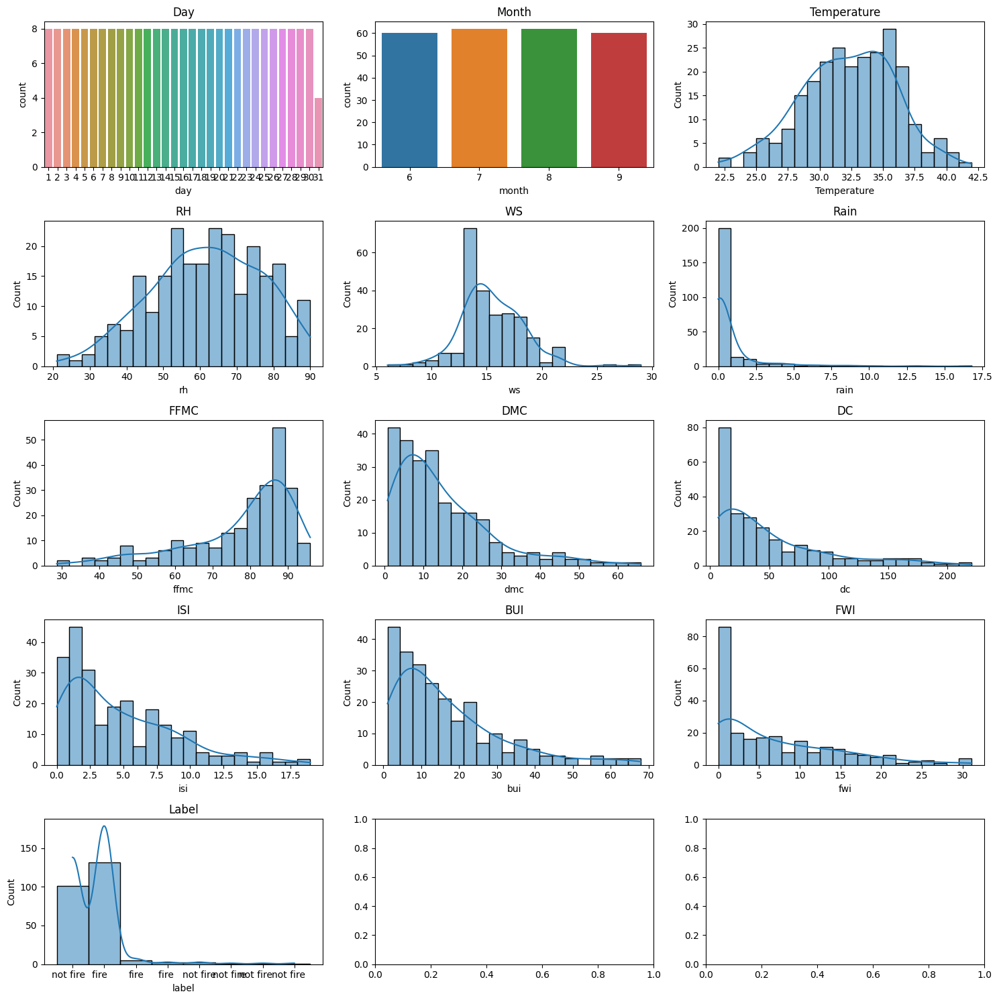
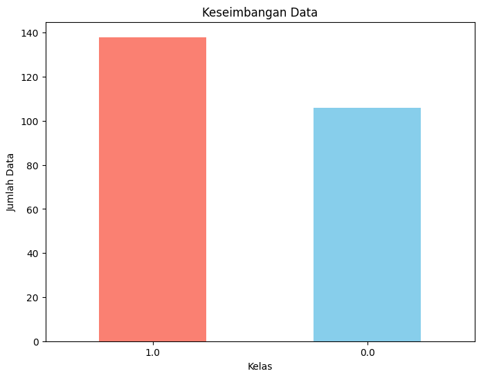
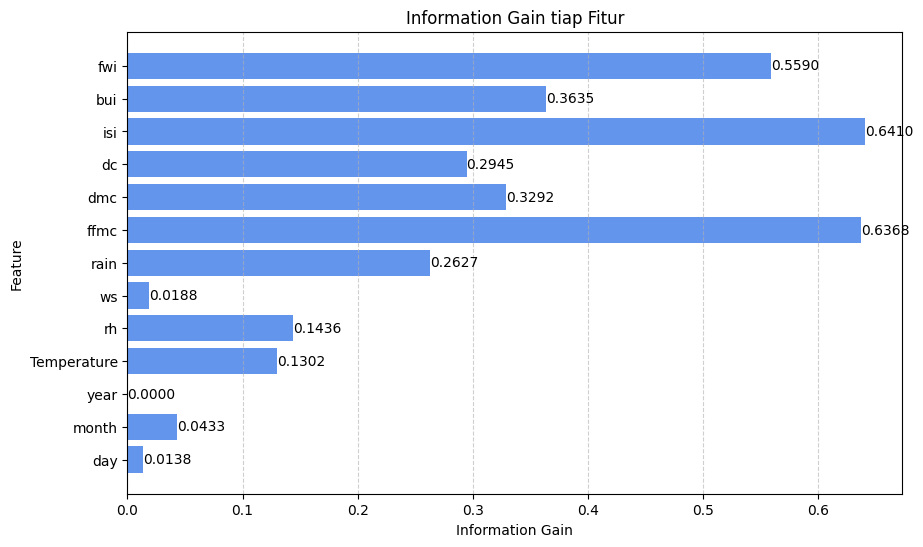

# Penyambungan drive
from google.colab import drive
drive.mount('/content/drive')Mounted at /content/driveSebelum data diolah, ada beberapa pertimbangan yang mungkin muncul dan harus diselesaikan terlebih dahulu. Berikut merupakan beberapa pembahasan + yang akan diselesaikan dalam pengolahan data kebakaran hutan di Algeria: - Apakah ada missing value dalam data yang dapat mempengaruhi hasil analisis? - Bagaimana hasil matriks statistik deskriptif dari tiap variabel? - Bagaimana visualisasi data tiap fitur? - Bagaimana keseimbangan dari tiap kelas yang ada dalam dataset? - Apakah ada outlier dalam data yang perlu diganti atau bahkan di hilangkan? - Apakah ada variabel yang perlu dirubah tipe datanya dalam proses pengolahan data? - Apakah semua variabel dalam dataset berpengaruh terhadap kebakaran hutan yang terjadi?
Untuk menentukan terjadinya kebakaran di hutan Algeria, dapat dilihat dengan ciri - ciri sebagai berikut: 1. Day 2. Month 3. Year 4. Temp (temperature) 5. RH (Relative Humidity) 6. Ws (Wind speed) 7. Rain 8. FFMC (Fine Fuel Moisture Code) 9. DMC (Duff Moisture Code) 10. DC (Drought Code) 11. ISI (Initial Spread Index) 12. BUI (Buildup Index) 13. FWI (Fire Weather Index) 14. Label
### a. Informasi Data - Data yang dipakai merupakan data sekunder atau data yang diambil dari tangan kedua atau tidak secara langsung. - Data yang digunakan adalah data kebakaran hutan di Algeria yang mencakup dua wilayah, yaitu Bejaia dan wilayah Sidi Bel-abbes. Data diambil di UCI Machine Learning. https://archive.ics.uci.edu/dataset/547/algerian+forest+fires+dataset. - Data tersebut dilisensikan dibawah lisensi Creative Commons Attribution 4.0 International (CC BY 4.0). - Data tersebut juga pernah digunakan untuk penelitian dan dibuatkan paper dalam bahasa inggris berjudul “Predicting Forest Fire in Algeria Using Data Mininng Techniques: Case Study of the Decision Tree Algorithm” yang di publikasikan pada tahun 2020. https://link.springer.com/epdf/10.1007/978-3-030-36674-2_37?sharing_token=xJb0_iIJF_m-WVlqwDhdq_e4RwlQNchNByi7wbcMAY6eoJYdJMzZVtZheRVk6beDJCBQ785jZKer7sE9MdbfNF3xFzxU-2nKULuDF9rLPBQkdoLbEN4p0A37NvBqXHABPM6j5MnyX8twmUlVXl_K92wd3Zy2ngyj8NEgwrQ-6AM= - Data berjumlah 244 dari dua wilayah di negara Algeria. - Data diambil dengan periode waktu dari Juni sampai September 2012 yang mana merupakan musim panas di daerah Algeria. - Terdapat 13 features, 1 sebagai kelas. - Kelas terbagi menjadi 2, yaitu 0 untuk tidak kebakaran, dan 1 untuk terjadi kebakaran. - Kelas 0 sebanyak 106 data, sedangkan kelas 1 sebanyak 138 data. - Karena hanya selisih 32 data saja diantara kelas 0 dan 1, maka tidak perlu dilakukan tahap balancing data. - Tidak ada missing value dalam data. - Data label dirubah menjadi numerik. - Terdapat beberapa fitur yang merupakan komponen dari Canadian Forest Fire Weather Index (FWI) System, yaitu FFMC, DMC, ISI, BUI, dan FWI - NB : Canadian Forest Fire Weather Index (FWI) System merupakan sistem indeks cuaca yang digunakan untuk mengukur risiko kebakaran hutan. Sistem ini dikembangkan di Kanada dan digunakan secara luas di berbagai negara untuk memberikan peringatan dini dan mengukur tingkat bahaya kebakaran hutan. FWI System menggabungkan beberapa komponen untuk mengevaluasi kondisi cuaca yang dapat mempengaruhi kebakaran hutan.
Day merupakan feature tanggal dilakukan pengamatan. Pada dataset, pengamatan dilakukan pada tanggal 1-31.
Month merupakan feature bulan. Pada dataset, pengamatan dilakukan dari bulan Juni sampai September(3 bulan), karena periode musim panas di negara Algeria dari bulan Juni awal sampai September/Oktober awal, tingkat kejadian kebakaran paling tinggi pada periode tersebut.
Year merupakan feature tahun. Pada dataset, pengamatan dilakukan pada tahun 2012, tahun dimana kejadian kebakaran tercatat paling tinggi dari tahun 2007 hingga 2018.
Temp (temperature), merupakan feature suhu yang ada pada data. Temp menggunakan derajat selsius dan memiliki suhu kisaran 22 sampai 42 derajat selsius. Pengukuran suhu menggunakan termometer modern yang dilengkapi dengan sensor digital untuk memberikan pembacaan yang lebih akurat.
RH (Relative Humidity) merupakan kelembapan relatif. RH menggunakan percentage dari 21 sampai 90. RH didapatkan dari perbandingan antara jumlah uap air yang ada di udara terhadap jumlah maksimum uap air yang diakomodasi oleh udara pada suhu tertentu. RH diukur menggunakan alat pengukur kelembapan (hygrometer), sehingga hasil yang didapat lebih akurat dan lebih mudah.
Ws (Wind speed) merupakan kecepatan angin yang menggunakan km/h dari 6 sampai 29. Ws dapat diukur dengan menggunakan alat pengukur yang bernama anemometer. Alat ini dirancang khusus untuk mengukur kecepatan dan tekanan angin, sehingga data yang didapatkan lebih akurat.
Rain merupakan total hujan dalam sehari dalam mm dari 0 – 16.8. Pengukuran total hujan dalam sehari menggunakan alat pengukur hujan berupa hujan pengukur atau pluviometer, yang memang dirancang khusus untuk volume air hujan yang jatuh dalam periode tertentu.
FFMC (Fine Fuel Moisture Code) merupakan pengukuran kelembaban bahan bakar ringan seperti rumput dan daun. FFMC diukur dengan menggunakan alat atau metode yang sudah terstandarisasi untuk mendapatkan hasil yang akurat, yaitu Fine Fuel Moisture Meter. FFMC melibatkan pengambilan sampel bahan bakar (misalnya rumput kering, dedaunan, dan serasah) dan pengukuran kadar kelembapan relatif bahan bakar tersebut. FFMC merupakan bagian dari Canadian Forest Fire Weather Index (FWI) system. Indeks dari system FWI adalah 28.6 sampai 92.5. Semakin rendah nilai FFMC, semakin rentan bahan bakar terhadap kebakaran.
DMC (Duff Moisture Code) merupakan pengukuran kelembaban lapisan organik seperti serasah dan humus. Pengukuran DMC juga menggunakan alat atau metode yang sudah terstandarisasi untuk mendapatkan hasil yang akurat, yaitu Duff Moisture Meter. DMC didapatkan dari bahan organik yang berada di bawah lapisan permukaan tanah atau yang sering disebut dengan lapisan duff. DMC juga salah satu komponen dari Canadian Forest Fire Weather Index (FWI) System. Indeks dari system FWI adalah 1.1 sampai 65.9. Nilai DMC yang tinggi menunjukkan kelembaban yang tinggi dan kesulitan untuk terbakar.
DC (Drought Code) merupakan pengukuran kelembaban tanah hingga kedalaman tertentu. DC pada Canadian Forest Fire Weather Index (FWI) System dihitung berdasarkan nilai kelembaban tanah pada kedalaman tertentu. DC diukur dengan menggunakan alat dan teknik khusus. DC dapat dihasilkan dari pengukuran kedalaman lapisan organik, serta informasi mengenai jenis tanah dan tipe vegetasi di area tersebut. Untuk mengukur DC, diperlukan peralatan atau sensor kelembaban tanah. Indeks dari system FWI adalah 7 sampai 220.4. Nilai DC yang tinggi menunjukkan tanah kering dan rentan terhadap kebakaran.
ISI (Initial Spread Index) merupakan pengukuran kecepatan potensial dan intensitas penyebaran kebakaran pada awal kebakaran. Untuk menghitung ISI berdasarkan rumus yang telah ditetapkan dalam Canadian Forest Fire Weather Index System. ISI pada Canadian Forest Fire Weather Index (FWI) System dihitung berdasarkan faktor-faktor seperti kecepatan angin, kelembaban relatif, dan kecepatan penyebaran kebakaran. Indeks dari system FWI adalah 0 sampai 18.5.
BUI (Buildup Index) mengukur tingkat akumulasi kekeringan di dua lapisan tanah, yaitu lapisan organik (duff) dan lapisan tanah yang lebih dalam, memberikan gambaran keseluruhan tentang potensi kebakaran hutan dalam jangka panjang. Dalam Canadian Forest Fire Weather Index (FWI) System, BUI dihitung berdasarkan Duff Moisture Code (DMC) dan Drought Code (DC). Indeks dari system FWI adalah 1.1 sampai 68.
FWI (Fire Weather Index) merupakan indeks cuaca kebakaran, digunakan untuk mengukur tingkat potensi kebakaran hutan. FWI didapatkan dari hasil rata-rata dari Fine Fuel Moisture Code (FFMC), Duff Moisture Code (DMC), dan Drought Code (DC). FWI memberikan gambaran umum tentang bahaya kebakaran hutan pada suatu waktu tertentu. Memiliki indeks 0 sampai 31.1.
Label memiliki dua kelas, yaitu fire (1) dan not fire (0).
Berikut merupakan penjelasan singkat mengenai tipe data yang terdapat dalam dataset. Numerik (Interval): Tipe data numerik (interval) merupakan tipe data yang memiliki nilai-nilai berurutan dengan jarak tetap di antara setiap nilai. Jarak antara dua nilai berturut-turut adalah konsisten dan dapat diukur. Contoh: Suhu dalam derajat Celsius, skala Fahrenheit. Misalnya, perbedaan antara 10°C dan 20°C sama dengan perbedaan antara 20°C dan 30°C.
Kategorikal (Nominal): Tipe data yang merepresentasikan kategori atau kelompok tanpa adanya urutan tertentu di antara kategori-kategori tersebut. Contoh: Warna (merah, biru, hijau), jenis buah (apel, jeruk, pisang). Urutan antara kategori tidak memiliki makna.
Kategorikal Biner (Nominal): tipe data subjenis dari tipe data kategorikal yang hanya memiliki dua kategori atau label. Contoh: Jenis kelamin (pria, wanita), status kebakaran (fire, not fire). Hanya memiliki dua nilai yang mungkin.
Day: Tipe data numerik (Interval) karena representasi tanggal observasi dalam rentang 1-31.
Month: Tipe data kategorikal (Nominal) karena representasi bulan observasi (June, July, August, September).
Year: Tipe data numerik (Interval) karena Representasi tahun observasi (2012).
Temp (Temperature): Tipe data numerik (Interval) karena representasi suhu dalam derajat Celsius (22-42).
RH (Relative Humidity): Tipe data numerik (Interval) karena representasi kelembapan relatif dalam persentase (21-90).
Ws (Wind speed): Tipe data numerik (Interval) karena representasi kecepatan angin dalam kilometer per jam (6-29).
Rain: Tipe data numerik (Interval) karena representasi total hujan dalam sehari dalam milimeter (0-16.8).
FFMC (Fine Fuel Moisture Code): Tipe data numerik (Interval) karena Indeks kelembaban bahan bakar ringan dalam rentang 28.6-92.5.
DMC (Duff Moisture Code): Tipe data numerik (Interval) karena Indeks kelembaban lapisan organik dalam rentang 1.1-65.9.
DC (Drought Code): Tipe data numerik (Interval) karena Indeks kelembaban tanah dalam rentang 7-220.4.
ISI (Initial Spread Index): Tipe data numerik (Interval) karena Indeks kecepatan penyebaran awal dalam rentang 0-18.5.
BUI (Buildup Index): Tipe data numerik (Interval) karena Indeks akumulasi kekeringan dalam rentang 1.1-68.
FWI (Fire Weather Index): Tipe data numerik (Interval) karena Indeks cuaca kebakaran dalam rentang 0-31.1.
Label: Tipe data kategorikal biner (Nominal) karena Dua kelas, “fire” yang akan diganti menjadi 1 dan “not fire” yang akan diganti menjadi 0.
Berikut merupakan penjelasan singkat mengenai bentuk data yang ada dalam dataset. Data nominal, merupakan jenis data kategorikal yang digunakan untuk memberi label pada variabel tanpa memberikan urutan atau tingkatan tertentu. Contoh: Jenis kelamin (laki-laki, perempuan), warna (merah, biru, hijau).
Data ordinal, merupakan data kategorikal yang memiliki urutan atau tingkatan tertentu, tetapi selisih antar nilai tidak memiliki arti. Contoh: Peringkat prestasi (1st, 2nd, 3rd), tingkat kepuasan (rendah, sedang, tinggi).
Data interval, memiliki urutan, tingkatan, dan selisih antar nilai yang memiliki arti. Namun, nilai nol pada skala interval tidak bersifat mutlak. Contoh: Suhu dalam Celsius atau Fahrenheit, skor tes IQ.
Data rasio, memiliki semua karakteristik data interval, namun memiliki nilai nol yang bersifat mutlak, yang berarti bahwa rasio antar nilai memiliki arti. Contoh: Tinggi badan, berat badan, pendapatan.
Day: Bentuk Data adalah Ordinal. Alasannya, meskipun day berupa angka, urutan tanggal memberikan urutan yang memiliki arti.
Month: Bentuk Data adalah Nominal. Alasannya, bulan tidak memiliki tingkatan atau urutan tertentu. Meskipun dijelaskan bahwa pengamatan dilakukan dari bulan Juni sampai September, bulan di sini digunakan sebagai label.
Year: Bentuk Data adalah Nominal. Alasannya, tahun digunakan sebagai label dan tidak memiliki tingkatan kategorikal.
Temp (Temperature): Bentuk Data adalah Rasio. Alasannya, suhu dalam derajat Celsius dengan nol mutlak yang memiliki arti. Memiliki tingkatan yang dapat diukur dan memiliki nol yang bermakna.
RH (Relative Humidity): Bentuk Data adalah Rasio. Alasannya, kelembapan relatif dalam persentase, dengan nol yang bermakna (tidak ada kelembapan). Memiliki tingkatan yang dapat diukur dan memiliki nol yang bermakna.
Ws (Wind Speed): Bentuk Data adalah Rasio. Alasannya, Kecepatan angin dalam km/h dengan nol mutlak yang bermakna. Memiliki tingkatan yang dapat diukur dan memiliki nol yang bermakna.
Rain: Bentuk Data adalah Rasio. Alasannya, total hujan dalam sehari dalam mm. Memiliki tingkatan yang dapat diukur dan memiliki nol yang bermakna.
FFMC (Fine Fuel Moisture Code): Bentuk Data adalah Rasio. Alasannya, indeks FWI dengan tingkatan yang dapat diukur dan memiliki nol yang bermakna.
DMC (Duff Moisture Code): Bentuk Data adalah Rasio. Alasannya, indeks FWI dengan tingkatan yang dapat diukur dan memiliki nol yang bermakna.
DC (Drought Code): Bentuk Data adalah Rasio. Alasannya, indeks FWI dengan tingkatan yang dapat diukur dan memiliki nol yang bermakna.
ISI (Initial Spread Index): Bentuk Data adalah Rasio. Alasannya, indeks FWI dengan tingkatan yang dapat diukur dan memiliki nol yang bermakna.
BUI (Buildup Index): Bentuk Data adalah Rasio. Alasannya, indeks FWI dengan tingkatan yang dapat diukur dan memiliki nol yang bermakna.
FWI (Fire Weather Index): Bentuk Data adalah Rasio. Alasannya, Indeks FWI dengan tingkatan yang dapat diukur dan memiliki nol yang bermakna.
Label: Bentuk Data adalah Nominal. Alasannya, Kelas atau label dengan nilai 0 dan 1, dianggap sebagai data kategorikal.
# Penyambungan drive
from google.colab import drive
drive.mount('/content/drive')Mounted at /content/drive%cd /content/drive/MyDrive/5_PSD/PSD_P9/content/drive/MyDrive/5_PSD/PSD_P9import os
import librosa
import numpy as np
import pandas as pdIdentifikasi missing value atau nilai yang hilang merupakan langkah awal yang perlu dilakukan dalam menganalisis data sebelum data diolah lebih lanjut. Hal tersebut dikarenakan missing value dapat mempengaruhi hasil analisis dan perlu ditangani dengan tepat.
# Load Data yang digunakan
data = pd.read_csv('Real_Algeria.csv')# Mengecek dan mencetak jumlah missing values untuk setiap kolom
missing_values = data.isnull().sum()
# Menampilkan hasil
print("Jumlah Missing Values untuk Setiap Fitur:")
print(missing_values)Jumlah Missing Values untuk Setiap Fitur:
day 0
month 0
year 0
Temperature 0
rh 0
ws 0
rain 0
ffmc 0
dmc 0
dc 0
isi 0
bui 0
fwi 0
label 0
dtype: int64Penjelasan Code
Digunakan untuk mengecek dan mencetak total missing value pada tiap kolom dalam dataset.
`missing_values = data.isnull().sum()`akan menghasilkan data dengan nilai true jika tiap pengecekan suatu baris berisi nilai NaN, dan False jika tidak ada nilai NaN, lalu akan ditambahkan kedalam missing value untuk tiap penemuannya (jika True, ditambah 1, jika False, ditambah 0).
Eksplorasi data juga merupakan tahap awal dalam analisis data yang bertujuan untuk memahami struktur, karakteristik, dan pola yang terdapat dalam dataset. Pada eksplorasi data penelitian ini, akan ditampilkan deskripsi statistik, visualisasi data, identifikasi outlier, dan proporsi dari dataset.
Data yang sebelumnya telah dikumpulkan perlu untuk dibersihkan sehingga dapat di analisis dengan berbagai teknik. Salah satunya adalah dengan analsisis data deskriptif menggunakan statistik untuk mengatur dan meringkas data, sehingga mudah untuk memahami kualitas kumpulan data secara luas. Berikut merupakan beberapa poin yang ada didalam deskripsi statistik : - Count : menghitung jumlah data yang ada dalam tiap fiturnya. - Mean : nilai rata-rata yang merupakan jumlah semua nilai dalam dataset dibagi dengan total nilai. - Standar Deviasi : mengukur seberapa jauh nilai - nilai dalam dataset tersebar dari rata - ratanya. Jika nilai standar deviasi rendah, maka datanya berdekatan dengan rata - rata. - Min : titik data terkecil dalam suatu dataset. - 25% : Kuartil pertama atau q1 merupakan nilai yang membagi 25% data terkecil dari data yang diurutkan. - 50% : Kuartil kedua atau q1 merupakan nilai yang membagi dataset menjadi dua bagian, dengan 50% data dibawahnya dan 50% diatasnya. - 75% : Kuartil ketiga atau q3 merupakan nilai yang membagi 75% data terkecil dari data yang diurutkan. - Max : titik terbesar dalam suatu dataset. - Median : nilai tengah dari data saat diurutkan. - Skewness : mengukur sejauh mana distribusi data condong atau miring dari distribusi normal. - Kurtosis : mengukur sejauh mana ekor distribusi lebih berat atau lebih ringan dibandingkan dengan distribusi normalnya.
#Import libary yang dibutuhkan
import matplotlib.pyplot as pltdata = pd.read_csv('Real_Algeria.csv')
df = pd.DataFrame(data)
# Statistik deskriptif
print(df.describe())
# Deskripsi Median tiap fitur
median = df.median()
print("\nMedian:")
print(median)
# Deskripsi Skewness tiap fitur
skewness = df.skew()
print("\nSkewness:")
print(skewness)
# Deskripsi Kurtotis tiap fitur
kurtosis = df.kurt()
print("\nKurtosis:")
print(kurtosis) day month year Temperature rh ws \
count 244.000000 244.000000 244.0 244.000000 244.000000 244.000000
mean 15.754098 7.500000 2012.0 32.172131 61.938525 15.504098
std 8.825059 1.112961 0.0 3.633843 14.884200 2.810178
min 1.000000 6.000000 2012.0 22.000000 21.000000 6.000000
25% 8.000000 7.000000 2012.0 30.000000 52.000000 14.000000
50% 16.000000 7.500000 2012.0 32.000000 63.000000 15.000000
75% 23.000000 8.000000 2012.0 35.000000 73.250000 17.000000
max 31.000000 9.000000 2012.0 42.000000 90.000000 29.000000
rain ffmc dmc dc isi bui \
count 244.000000 244.000000 244.000000 244.000000 244.000000 244.000000
mean 0.760656 77.887705 14.673361 49.288115 4.759836 16.673361
std 1.999406 14.337571 12.368039 47.619662 4.154628 14.201648
min 0.000000 28.600000 0.700000 6.900000 0.000000 1.100000
25% 0.000000 72.075000 5.800000 13.275000 1.400000 6.000000
50% 0.000000 83.500000 11.300000 33.100000 3.500000 12.450000
75% 0.500000 88.300000 20.750000 68.150000 7.300000 22.525000
max 16.800000 96.000000 65.900000 220.400000 19.000000 68.000000
fwi
count 244.000000
mean 7.049180
std 7.428366
min 0.000000
25% 0.700000
50% 4.450000
75% 11.375000
max 31.100000
Median:
day 16.00
month 7.50
year 2012.00
Temperature 32.00
rh 63.00
ws 15.00
rain 0.00
ffmc 83.50
dmc 11.30
dc 33.10
isi 3.50
bui 12.45
fwi 4.45
dtype: float64
Skewness:
day 0.002806
month 0.000000
year 0.000000
Temperature -0.196309
rh -0.237964
ws 0.545881
rain 4.579071
ffmc -1.325633
dmc 1.527652
dc 1.479042
isi 1.126950
bui 1.458466
fwi 1.143243
dtype: float64
Kurtosis:
day -1.198650
month -1.345988
year 0.000000
Temperature -0.154310
rh -0.530328
ws 2.602156
rain 25.942123
ffmc 1.055208
dmc 2.487598
dc 1.614097
isi 0.829860
bui 1.979913
fwi 0.655316
dtype: float64FutureWarning: The default value of numeric_only in DataFrame.median is deprecated. In a future version, it will default to False. In addition, specifying 'numeric_only=None' is deprecated. Select only valid columns or specify the value of numeric_only to silence this warning.
median = df.median()
<ipython-input-7-8506f3e39dd1>:13: FutureWarning: The default value of numeric_only in DataFrame.skew is deprecated. In a future version, it will default to False. In addition, specifying 'numeric_only=None' is deprecated. Select only valid columns or specify the value of numeric_only to silence this warning.
skewness = df.skew()
<ipython-input-7-8506f3e39dd1>:18: FutureWarning: The default value of numeric_only in DataFrame.kurt is deprecated. In a future version, it will default to False. In addition, specifying 'numeric_only=None' is deprecated. Select only valid columns or specify the value of numeric_only to silence this warning.
kurtosis = df.kurt()Penjelasan Code
`data = pd.read_csv('Real_Algeria.csv')`Untuk membaca file csv bernama Real_Algeria yang ada pada drive.
df = pd.DataFrame(data)
print(df.describe())Membuat data frame lalu menampung data kedalam df sehingga data dapat diubah mejadi DataFrame (dict, array np, dll). Lalu menampilkan deskripsi statistik seperti mean, std, min, max, dan yang lainnya yang ada pada data.
median = df.median()
print("\nMedian:")
print(median)Code diatas untuk menampilkan nilai median dari tiap fitur yang ada didalam dataset.
skewness = df.skew()
print("\nSkewness:")
print(skewness)Code diatas untuk menampilkan nilai skewness dari tiap fitur.
kurtosis = df.kurt()
print("\nKurtosis:")
print(kurtosis)Dan kode diatas untuk menampilkan kurtosis dari tiap fitur.
Visualisasi data melibatkan penggambaran informasi dan data secara grafis melalui berbagai bentuk seperti bagan, grafik, dan peta. Tujuan utamanya adalah untuk menyampaikan informasi dengan cara yang mudah untuk dipahami dan dapat diinterpretasikan. Visualisasi dapat membantu mengidentifikasi pola didalam data yang kompleks melalui tabel atau angka, informasi dalam bentuk visual seperti penggambaran grafik dan histogram pun mempermudah pemahaman seseorang terhadap suatu data dan membantu dalam pengambilan keputusan dengan menyediakan pandangan yang jelas dan intuitif terhadap masalah yang dihadapi.
Berikut merupakan code dan Histogram untuk tiap fitur yang ada didalam dataset.
# GRAFIK
import seaborn as sns
# Membuat subplot
fig, axes = plt.subplots(5, 3, figsize=(15, 15))
# Menampilkan data untuk setiap fitur
sns.countplot(x="day", data=data, ax=axes[0, 0])
axes[0, 0].set_title("Day")
sns.countplot(x="month", data=data, ax=axes[0, 1])
axes[0, 1].set_title("Month")
sns.histplot(data["Temperature"], ax=axes[0, 2], bins=20, kde=True)
axes[0, 2].set_title("Temperature")
sns.histplot(data["rh"], ax=axes[1, 0], bins=20, kde=True)
axes[1, 0].set_title("RH")
sns.histplot(data["ws"], ax=axes[1, 1], bins=20, kde=True)
axes[1, 1].set_title("WS")
sns.histplot(data["rain"], ax=axes[1, 2], bins=20, kde=True)
axes[1, 2].set_title("Rain")
sns.histplot(data["ffmc"], ax=axes[2, 0], bins=20, kde=True)
axes[2, 0].set_title("FFMC")
sns.histplot(data["dmc"], ax=axes[2, 1], bins=20, kde=True)
axes[2, 1].set_title("DMC")
sns.histplot(data["dc"], ax=axes[2, 2], bins=20, kde=True)
axes[2, 2].set_title("DC")
sns.histplot(data["isi"], ax=axes[3, 0], bins=20, kde=True)
axes[3, 0].set_title("ISI")
sns.histplot(data["bui"], ax=axes[3, 1], bins=20, kde=True)
axes[3, 1].set_title("BUI")
sns.histplot(data["fwi"], ax=axes[3, 2], bins=20, kde=True)
axes[3, 2].set_title("FWI")
sns.histplot(data["label"], ax=axes[4, 0], bins=20, kde=True)
axes[4, 0].set_title("Label")
# Menampilkan plot
plt.tight_layout()
plt.show()
Penjelasan Code
`import seaborn as sns`Untuk mengimpor library seaborn dalam proses visualisasi data.
fig, axes = plt.subplots(5, 3, figsize=(15, 15))Untuk membuat subplot dengan ukuran 5 baris * 3 kolom (karena terdapat 13 kolom, jadi memakai uk 5*3).
sns.countplot(x="day", data=data, ax=axes[0, 0])
axes[0, 0].set_title("Day")Membuat plot bar penghitung jumlah masukan data dalam kolom day, dengan data yang berada pada var. data, dengan posisi subplot berupa 0,0.
Lalu pada posisi subplot tsb, akan diberikan judul, pada code diatas, judulnya adalah “Day”.
Hal yang sama akan berlaku untuk semua fitur, yang berbeda hanya posisi subplotnya saja, dimana baris dan kolomnya akan di ubah (baris = 0-4, kolom = 0-2).
plt.tight_layout()Digunakan untuk menyusun subplot sehingga tidak tumpang tindih, sehingga lebih terstruktur dan rapi.
plt.show()Digunakan untuk menunjukkan histogram yang telah di buat dari code sebelumnya.
Outlier merupakan nilai yang secara signifikan berbeda dari sebagian data dalam suatu dataset. Outlier dapat menjadi nilai yang jauh lebih tinggi atau lebih rendah dari sebagian besar nilai dalam kumpulan data. Penanganan outlier penting dalam proses analisis data karena nilai tersebut dapat mempengaruhi hasil statistik dan interpretasi dari keseluruhan data. Outlier dapat menjadi indikasi kesalahan pengukuran dan yang lainnya. Outlier bisa ditangani dengan beberapa cara seperti, menghapus data outlier jika jumlah datasetnya banyak dan outliernya sedikit, menggantikan nilai outlier dengan nilai lain seperti median jika jumlah datasetnya sedikit, melakukan transformasi data seperti logaritma atau akar kuadrat untuk mengurangi dampak outlier, dan yang lainnya.
# Pemeriksaan nilai unik
data = pd.read_csv('Real_Algeria.csv')
df = pd.DataFrame(data)
for column in data.columns:
unique_values = data[column].unique()
print(f"Unique values in {column}: {unique_values}")Unique values in day: [ 1 2 3 4 5 6 7 8 9 10 11 12 13 14 15 16 17 18 19 20 21 22 23 24
25 26 27 28 29 30 31]
Unique values in month: [6 7 8 9]
Unique values in year: [2012]
Unique values in Temperature: [29 26 25 27 31 33 30 28 32 34 35 36 37 22 24 38 39 40 42]
Unique values in rh: [57 61 82 89 77 67 54 73 88 79 65 81 84 78 80 55 62 66 64 53 47 50 68 75
76 63 69 70 59 48 45 60 51 52 58 86 74 71 49 44 41 42 90 87 72 46 37 36
56 43 83 29 34 33 35 39 31 21 40 24 38 26]
Unique values in ws: [18 13 22 16 14 15 12 19 21 20 17 26 11 10 9 8 6 29]
Unique values in rain: [ 0. 1.3 13.1 2.5 0.2 1.2 0.5 3.1 0.7 0.6 0.3 0.1 0.4 1.
1.4 0.8 16.8 7.2 10.1 3.8 0.9 1.8 4.6 8.3 5.8 4. 2. 4.7
8.7 4.5 1.1 1.7 2.2 6. 1.9 2.9 4.1 6.5 4.4]
Unique values in ffmc: [65.7 64.4 47.1 28.6 64.8 82.6 88.2 86.6 52.9 73.2 84.5 84. 50. 59.
49.4 36.1 37.3 56.9 79.9 59.8 81. 79.1 81.4 85.9 86.7 86.8 89. 89.1
88.7 59.9 55.7 63.1 80.1 87. 80. 85.6 66.6 81.1 75.1 81.8 73.9 60.7
72.6 82.8 85.4 88.1 73.4 68.2 70. 84.3 89.2 90.3 86.5 87.2 78.8 78.
76.6 85. 86.4 77.1 87.4 88.9 81.3 82.4 80.2 89.3 89.4 88.3 88.6 89.5
85.8 84.9 90.1 72.7 52.5 46. 30.5 42.6 68.4 80.8 75.8 69.6 62. 56.1
58.5 71. 40.9 47.4 44.9 78.1 87.7 83.8 87.8 77.8 73.7 68.3 48.6 82.
85.7 77.5 45. 57.1 48.7 79.4 83.7 71.4 90.6 72.3 53.4 66.8 62.2 65.5
64.6 60.2 86.2 78.3 74.2 85.3 86. 92.5 79.7 63.7 87.6 84.7 88. 90.5
82.3 74.8 85.2 84.6 86.1 89.9 93.9 91.5 87.3 72.8 73.8 87.5 93.3 93.7
93.8 70.5 69.7 91.7 94.2 93. 91.9 83.9 92. 96. 94.3 82.7 91.2 92.1
92.2 91. 79.2 37.9 75.4 82.2 73.5 66.1 64.5 83.3 82.5 83.1 59.5 84.2
79.5 61.3 41.1 45.9 67.3]
Unique values in dmc: [ 3.4 4.1 2.5 1.3 3. 5.8 9.9 12.1 7.9 9.5 12.5 13.8 6.7 4.6
1.7 1.1 1.9 4.5 6.3 7. 8.2 11.2 14.2 17.8 21.6 25.5 18.4 22.9
2.4 2.6 7.6 10.9 9.7 7.7 6. 8.1 7.8 5.2 9.4 12. 12.3 18.5
16.4 10.5 9.6 17.1 22.2 24.4 26.7 28.5 31.9 4.8 5.7 11.1 13. 15.5
11.3 14.8 18.6 21.7 15.6 19. 11.7 16. 20. 23.2 25.9 29.6 33.5 37.6
40.5 43.9 45.6 47. 50.2 54.2 25.2 8.7 0.7 1.2 3.6 3.2 2.1 2.2
0.9 6.4 9.8 13.5 16.5 10.6 5.5 8.3 7.1 2.9 2.7 8.4 8.5 13.3
18.2 21.3 11.4 7.2 4.2 3.9 4.4 3.8 10. 12.8 20.9 27.2 17.9 13.6
18.7 8. 12.6 12.9 18. 19.4 21.1 23.9 27.8 32.7 39.6 44.2 46.6 10.8
11.8 15.7 19.5 23.8 28.3 23. 23.6 11. 15.8 22.5 16.9 22.3 22.6 30.3
35.9 34.4 36.9 41.1 46.1 51.3 56.3 61.3 65.9 37. 20.7 24.8 4. 3.3
6.6 4.7 6.5 11.5 21.2 25.8 24.9 26.1 29.4 11.9 3.5 4.3]
Unique values in dc: [ 7.6 7.1 6.9 14.2 22.2 30.5 38.3 38.8 46.3 54.3 61.4 17.
7.8 7.4 8. 16. 27.1 31.6 39.5 47.7 55.8 63.8 71.8 80.3
88.5 84.4 92.8 8.6 8.3 9.2 18.5 27.9 37. 40.4 49.8 9.3
18.7 27.7 37.2 22.9 25.5 34.1 43.1 52.8 62.1 71.5 79.9 71.3
79.7 88.7 98.6 108.5 117.8 127. 136. 145.7 10.2 10. 19.8 29.7
39.1 48.6 47. 57. 67. 77. 75.1 85.1 94.7 92.5 90.4 100.7
110.9 120.9 130.6 141.1 151.3 161.5 171.3 181.3 190.6 200.2 210.4 220.4
180.4 8.7 7.5 7. 15.7 24. 32.2 30.1 8.4 8.9 16.6 7.3
24.3 33.1 41.3 49.3 57.9 41.4 30.4 15.2 7.7 16.3 24.9 8.8
8.2 15.4 17.6 26.3 28.9 14.7 22.5 37.8 18.4 25.6 34.5 43.3
52.4 36.7 8.5 17.8 27.3 36.8 46.4 45.1 35.4 9.7 9.9 9.5
19.4 10.4 14.6 24.1 42.3 51.6 61.1 71. 80.6 90.1 99. 56.6
15.9 19.7 28.3 37.6 47.2 57.1 67.2 10.5 21.4 32.1 42.7 52.5
9.1 9.8 20.2 30.9 41.5 55.5 54.2 65.1 76.4 86.8 96.8 107.
117.1 127.5 137.7 147.7 157.5 167.2 177.3 166. 149.2 159.1 168.2 26.6
17.7 26.1 25.2 33.4 50.2 59.2 63.3 77.8 86. 88. 97.3 106.3
115.6 28.1 36.1 44.5 7.9 16.5]
Unique values in isi: [ 1.3 1. 0.3 0. 1.2 3.1 6.4 5.6 0.4 4. 4.8 0.5 0.7 2.5
0.9 2.6 2.4 3.3 5.7 6.7 9.2 7.6 2.2 7.2 1.1 0.8 2.7 2.8
6. 1.5 3. 1.4 3.2 4.6 7.7 5.2 1.8 10. 8.7 4.7 6.8 2.
1.7 5.5 6.9 7.4 7.1 5.9 3.7 9.7 8.8 9.9 10.4 9. 8.2 4.4
7.3 12.5 0.6 0.2 0.1 2.1 1.9 6.2 7.8 4.5 5.4 8.4 13.4 5.
1.6 4.9 7. 8. 11.7 11.3 4.3 4.1 8.3 4.2 10.9 9.5 18.5 13.2
13.8 17.2 15.7 19. 9.6 16.6 15.5 7.5 10.8 3.5 16. 3.8 5.1 11.5
12.2 14.3 13.1 8.1 9.8 9.1 14.2 11.2]
Unique values in bui: [ 3.4 3.9 2.7 1.7 7. 10.9 13.5 10.5 12.6 15.8 17.7 6.7 4.4 3.
2.2 1.6 2.4 5.3 5.1 8.4 9.7 11.5 14.9 18.3 21.6 25.8 29.7 23.8
28.3 2.9 2.8 5.7 9.1 12.5 12.1 15.4 7.4 5.8 8.1 9.2 11.7 5.9
8.3 11.1 14.2 18.2 16.5 22.4 21.7 14.7 18.5 23.9 29.4 32.1 35. 37.4
41.2 4.7 5.5 8.2 17.2 14.1 17.9 21.9 25.5 20.7 24.4 27.2 22. 17.6
22.9 27.5 31.3 34.7 38.8 43.1 47.5 50.9 54.7 57.1 59.3 62.9 67.4 1.8
1.1 5.6 2.6 3.7 1.4 4.2 7.7 11.3 16. 19.2 12.9 9.6 6.2 9.
6.8 6.5 9.3 10.7 7.3 13.1 18. 21.2 6.1 7.1 4.1 3.8 9.9 12.7
16.4 20.8 27.1 17.8 3.3 7.8 10.3 18.7 16.7 13.7 9.4 20.9 27.7 32.6
39.5 44. 46.5 11.4 11.8 15.7 19.5 10.6 16.9 23.5 6.9 11. 18.4 17.5
22.3 19. 24.2 30.4 35.9 35.5 38.1 41.3 45.5 50.2 54.9 59.5 64. 68.
30.6 35.7 39.3 4. 6. 3.5 6.4 10. 4.6 6.6 12.4 14.3 26.2 28.2
28.9 32.4 36. 11.9 4.8]
Unique values in fwi: [ 0.5 0.4 0.1 0. 2.5 7.2 7.1 0.3 0.9 5.6 0.2 1.4 2.2 2.3
3.8 7.5 8.4 10.6 15. 13.9 3.9 12.9 1.7 4.9 6.8 3.2 8. 0.6
3.4 0.8 3.6 6. 10.9 4. 8.8 2.8 2.1 1.3 7.3 15.3 11.3 11.9
10.7 15.7 6.1 2.6 9.9 11.6 12.1 4.2 10.2 6.3 14.6 16.1 17.2 16.8
18.4 20.4 22.3 20.9 20.3 13.7 13.2 19.9 30.2 5.9 7.7 9.7 8.3 0.7
4.1 1. 3.1 1.9 10. 16.7 1.2 5.3 6.7 9.5 12. 6.4 5.2 3.
9.6 4.7 10.4 14.1 9.1 13. 17.3 30. 25.4 16.3 9. 14.5 13.5 19.5
12.6 12.7 21.6 18.8 10.5 5.5 14.8 24. 26.3 12.2 18.1 24.5 26.9 31.1
30.3 26.1 16. 19.4 2.7 3.7 10.3 5.7 9.8 19.3 17.5 15.4 15.2 6.5]
Unique values in label: ['not fire ' 'fire ' 'fire' 'fire ' 'not fire' 'not fire '
'not fire ' 'not fire ']Penjelasan Code
for column in data.columns:Iterasi untuk tiap kolom yang ada dalam dataset.
for column in data.columns:Membuat variabel yang digunakan untuk menampung nilai unik dari kolom dalam dataset yang sedang di iterasi.
print(f"Unique values in {column}: {unique_values}")Menampilkan informasi nilai unik dalam tiap kolom.
Proporsi data mengacu pada perbandingan atau distribusi relatif dari nilai - nilai dalam satu dataset secara keseluruhan. Proporsi data banyak digunakan untuk menyajikan distribusi relatif dengan jelas. Proporsi data dapat dihitung dalam bentuk persentase atau rasio. Diagram proporsi dapat membantu menyampaikan informasi dnegan cara yang lebih mudah untuk dimengerti.
Pada code dibawah ini, terlihat jika selisih diantara dua kelas cukup kecil, yaitu hanya berbeda 32 data, sehingga balancing data tidak diperlukan karena tidak mengakibatkan bias yang signifikan dalam model.
import pandas as pd
import matplotlib.pyplot as plt
# Membaca data dari file CSV
data = pd.read_csv('New_Algeria.csv')
# Menghitung jumlah data untuk setiap kelas
class_counts = data['label'].value_counts()
# Menampilkan jumlah data per kelas
print("Jumlah data per kelas:")
print(class_counts)
# Membuat diagram batang
plt.figure(figsize=(8, 6))
class_counts.plot(kind='bar', rot=0, color=['salmon', 'skyblue'])
plt.title('Keseimbangan Data')
plt.xlabel('Kelas')
plt.ylabel('Jumlah Data')
plt.show()Jumlah data per kelas:
1.0 138
0.0 106
Name: label, dtype: int64
Penjelasan Code
data = pd.read_csv('New_Algeria.csv')Data yang digunakan adalah data baru hasil dari scaling menggunakan minmax untuk mengatasi outlier.
class_counts = data['label'].value_counts()
print("Jumlah data per kelas:")
print(class_counts)Menghitung jumlah dari data untuk tiap nilai dalam kolom label dan dimasukkan kedalam variabel bernama “class_counts”. Menampilkan jumlah data untuk tiap kelasnya dengan perintah “print(class_counts)”.
plt.figure(figsize=(8, 6))
class_counts.plot(kind='bar', rot=0, color=['skyblue', 'salmon'])Membuat gambar atau figure untuk diagram batang dengan ukuran 8 * 6 inchi. Membuat diagram batang berdasarkan data yang sebelumnya sudah dihitung. - kind='bar' untuk membuat diagram batangnya. - rot=0 untuk menunjukkan jika label pada sumbu x tidak diputar. - color=['skyblue', 'salmon'] untuk menentukan warna tiap diagram batangnya. Fire (1) berwarna salmon, dan not fire (0) berwarna skyblue.
plt.title('Keseimbangan Data')
plt.xlabel('Kelas')
plt.ylabel('Jumlah Data')
plt.show()Membuat code untuk menambahkan judul pada diagram batangnya nanti. Menambahkan label pada sumbu x, yaitu Kelas. Menambahkan label pada sumbu y, yaitu Jumlah Data. Menampilkan diagram batang.
# Load Data
data = pd.read_csv('New_Algeria.csv')# Pemisahan Fitur dan Label
X = data.drop('label', axis=1)
y = data['label']Information gain merupakan metrik yang mengukur pengurangan entropi dalam konteks decision tree melalui pembagian data berdasarkan nilai tertentu dari variabel acak untuk menilai seberapa baik suatu fitur memisahkan dataset menjadi label yang diinginkan. Information gain diukur dengan cara menghitung perbedaan dalam entropy (tingkat ketidakpastian) sebelum dan setelah dipisahkan berdasarkan suatu fitur. Dengan kata lain, semakin besar perbedaan entropy, maka semakin besar information gain dan fitur tersebut dianggap lebih baik dalam memisahkan dataset. Dengan menggunakan information gain, dapat membantu pemilihan fitur mana saja yang paling informatif untuk membuat keputusan yang lebih akurat dalam memprediksi label.
import matplotlib.pyplot as plt
from sklearn.feature_selection import mutual_info_classif
# Mengukur Information Gain untuk setiap fitur
info_gain = mutual_info_classif(X, y)
# Menampilkan Information Gain untuk setiap fitur
feature_info_gain = pd.DataFrame({'Feature': X.columns, 'Information_Gain': info_gain})
print(feature_info_gain) Feature Information_Gain
0 day 0.013816
1 month 0.043294
2 year 0.000000
3 Temperature 0.130187
4 rh 0.143620
5 ws 0.018826
6 rain 0.262742
7 ffmc 0.636823
8 dmc 0.329212
9 dc 0.294548
10 isi 0.641048
11 bui 0.363502
12 fwi 0.558985Penjelasan Code
data = pd.read_csv('New_Algeria.csv')Membaca dataset yang dsimpan dalam file csv di variabel “data”.
X = data.drop('label', axis=1)
y = data['label']Memisahkan fitur dengan label. Variabel X untuk menyimpan semua kolom fitur kecuali label. Variabel y untuk menyimpan kolom label saja.
from sklearn.feature_selection import mutual_info_classif
info_gain = mutual_info_classif(X, y)Menggunakan fungsi bawaan dari scikit-learn, yaitu “mutual_info_classif” untuk mengukur mutual information. Mengukur mutual information antara fitur pada matriks X yang berisi fitur, dan vektor y yang berisi label/kelas dan disimpan kedalam variabel bernama “info_gain”.
feature_info_gain = pd.DataFrame({'Feature': X.columns, 'Information_Gain': info_gain})
print(feature_info_gain)Membuat data frame yang isinya yaitu nama fitur beserta informasi gainnya. Menampilkan data frame untuk melihat information gain tiap fiturnya.a
Tahap preprocessing atau yang berarti pra-pemrosesan terhadap data ini merupakan bagian dari tahap persiapan data, yang menjadi salah satu tahap awal yang penting dalam proses pengolahan data. Melalui tahapan ini, data akan menjadi lebih bersih, konsisten, dan siap untuk digunakan, hal tersebut tentu saja dapat membuat analisis lebih akurat dan pembangunan model lebih efisien.
Berikut merupakan tahapan preprocesssing yang akan dilakukan dalam penelitian ini. - Seleksi fitur untuk mengidentifikasi dan memilih fitur mana saja yang paling relevan untuk dianalisis lebih lanjut. - Transformasi data yang didalamnya terdapat tahap normalisasi atau standarisasi data untuk mengubah rentang nilai dari suatu variabel sehingga nilai tersebut dapat diperbandingkan atau diolah dengan lebih baik dalam konteks analisis data. Tahap selanjutnya yaitu transfromasi variabel kategorikal menjadi bentuk yang dapat diolah, tetapi pada dataset, semuanya telah berbentuk numerik, sehingga bisa langsung dilewati. - Splitting data, membagi data menjadi training set dan testing set untuk evaluasi model. - Normalisasi atau standarisasi pada data numerik.
Karena pada dataset terdapat banyak nilai outlier, maka perlu ditangani. Jumlah dataset hanya sebanyak 244 data saja, sehingga digunakan cara transformasi data dengan menggunakan minmax scaling. Nantinya, nilai - nilai yang dianggap sebagai outlier (diluar rentang 0-1) digantikan dengan nilai batas (0 atau 1).
Alasan menggunakan minmax scaling : Karena dengan minmax scaling, bentuk dari distribusi data dipertahankan dan tidak mengubah urutan relatif antar nilainya. Rentang hasilnya pun mudah untuk diinterpretasi untuk dimasukkan kedalam model atau analisis berikutnya.
import pandas as pd
from sklearn.preprocessing import MinMaxScaler
data = pd.read_csv('Algerian_Outlier_New.csv')
df = pd.DataFrame(data)
# Fungsi untuk mendeteksi outlier menggunakan Min-Max Scaling
def detect_and_handle_outliers(data, threshold=3):
# Menggantikan outlier dengan nilai Min-Max Scaling
scaler = MinMaxScaler()
data_no_outliers = pd.DataFrame(scaler.fit_transform(data), columns=data.columns)
# Menghitung jumlah outlier
outliers = (data_no_outliers < 0) | (data_no_outliers > 1)
total_outliers = outliers.sum().sum()
return data_no_outliers, total_outliers
# Menggunakan fungsi untuk mendeteksi dan mengatasi outlier
data_no_outliers, total_outliers = detect_and_handle_outliers(data)
# Menampilkan hasil
print("Data setelah mengatasi outlier dengan Min-Max Scaling:")
print(data_no_outliers)
print(f"Total outlier: {total_outliers}")Data setelah mengatasi outlier dengan Min-Max Scaling:
day month year Temperature rh ws rain \
0 0.000000 0.0 0.0 0.35 0.521739 0.521739 0.000000
1 0.033333 0.0 0.0 0.35 0.579710 0.304348 0.077381
2 0.066667 0.0 0.0 0.20 0.884058 0.695652 0.779762
3 0.100000 0.0 0.0 0.15 0.985507 0.304348 0.148810
4 0.133333 0.0 0.0 0.25 0.811594 0.434783 0.000000
.. ... ... ... ... ... ... ...
239 0.833333 1.0 0.0 0.40 0.637681 0.347826 0.000000
240 0.866667 1.0 0.0 0.30 0.956522 0.391304 0.261905
241 0.900000 1.0 0.0 0.25 0.956522 1.000000 0.029762
242 0.933333 1.0 0.0 0.10 0.478261 0.521739 0.005952
243 0.966667 1.0 0.0 0.10 0.623188 0.391304 0.011905
ffmc dmc dc isi bui fwi label
0 0.550445 0.041411 0.003279 0.068421 0.034380 0.016077 0.0
1 0.531157 0.052147 0.003279 0.052632 0.041854 0.012862 0.0
2 0.274481 0.027607 0.000937 0.015789 0.023916 0.003215 0.0
3 0.000000 0.009202 0.000000 0.000000 0.008969 0.000000 0.0
4 0.537092 0.035276 0.034192 0.063158 0.041854 0.016077 0.0
.. ... ... ... ... ... ... ...
239 0.842730 0.234663 0.176112 0.236842 0.236173 0.209003 1.0
240 0.185460 0.088957 0.005152 0.005263 0.076233 0.000000 0.0
241 0.256677 0.042945 0.004684 0.021053 0.034380 0.006431 0.0
242 0.758160 0.055215 0.038876 0.089474 0.059791 0.022508 0.0
243 0.574184 0.047546 0.044965 0.063158 0.055306 0.016077 0.0
[244 rows x 14 columns]
Total outlier: 0#Menyimpan data baru dalam csv
data_no_outliers.to_csv('New_Algeria.csv', index=False)Penjelasan Code
data = pd.read_csv('Algerian_Outlier_New.csv')Pada tahap ini, digunakan data baru karena pada label masih berisi text yang berarti mempunyai tipe data string dan tidak bisa dilakukan penanganan outlier, sehingga data dalam label diganti dengan not fire (0) dan fire (1), lalu disimpan kedalam csv baru bernama Algerian_Outlier_New.
def detect_and_handle_outliers(data, threshold=3):Membuat fungsi untuk menerima dataset dan treshold sebagai argumen. Fungsi diberi nama detect_and_handle_outliers.
scaler = MinMaxScaler()
data_no_outliers = pd.DataFrame(scaler.fit_transform(data), columns=data.columns)
Membuat objek minmax scaler yang digunakan untuk melalukan minmaxscaling terhadap dataset. Lalu mengaplikasikan minmax scaling ke dataset dan hasilnya disimpan kedalam data frame yang baru, bernama “data_no_outliers”.
outliers = (data_no_outliers < 0) | (data_no_outliers > 1)
total_outliers = outliers.sum().sum()Menghitung jumlah outlier dengan identifikasi nilai yang kurang dari 0 atau lebih dari 1 setelah scaling dilakukan. Jika masih ditemukan nilai outlier, maka akan ditambahkan kedalam variabel bernama “total_outliers”.
print("Data setelah mengatasi outlier dengan Min-Max Scaling:")
print(data_no_outliers)
print(f"Total outlier: {total_outliers}")Menampilkan data baru yang telah di lakukan proses minmax scaling dan total outlier yang masih ada didalam data.
data_no_outliers.to_csv('New_Algeria.csv', index=False)data baru yang sudah diatasi outliernya disimpan menjadi csv untuk proses analisis selanjutnya. Mulai sekarang, akan menggunakan data baru ini.
Seleksi fitur merupakan aspek penting dala pembangunan model karena dapat mengurangi kompleksitas dan meningkatkan efisiensi proses pemodelan. Dengan memilih fitur - fitur mana saja yang paling berpengaruh, maka dapat mengatasi masalah masalah yang terdapat dalam dataset, meningkatkan kemampuan untuk menemukan pola, dan memastikan model yang lebih baik. Seleksi fitur membantu menyeimbangkan antara memiliki terlalu banyak data yang kurang bernilai dan terlalu sedikit data yang bernilai.
Seleksi fitur dapat dilakukan menggunakan berbagai metode, yaitu : - Information gain/Mutual Information : untuk mengukur seberapa banyak informasi yang diberikan oleh suatu fitur terhadap label kelas. - Chi-square (X^2) test : untuk mengevaluasi seberapa independen dua variabel kategorikal. - Recursive Feature Elimination (RFE) : melibatkan penghapusan iteratif fitur dengan bobot terendah dan membangun model ulang. - Least Absoluute Shrinkage and Selection Operator (LASSO) : menggunakan regularisasi L1 untuk menambahkan penalitas padakoefisien fitur, mendorong beberapa koefisien menjadi nol, sehingga menghilangkan fitur yang kurang penting. - Tree-Based Methods (Random Forest, XGBoost : menggunakan importance score dari fitur-fitur dalam decision tree untuk menilai seberapa nilai yang dimiliki oleh suatu fitur. - Correlation Matrix : mengukur tingkat hubungan antara dua variabel. - Principal Component Analysis (PCA) : mengurangi dimensi dataset dengan merangkum variasi dalam fitur-fitur yang ada. - Univariate Feature Selection : nekibatkan pengujian statistik untuk mengevaluasi signifikansi tiap fitur secara terpisah terhadap label kelas.
Seleksi fitur yang yang akan dilakukan akan menggunakan information gain. Information gain merupakan metrik yang mengukur pengurangan entropi dalam konteks decision tree melalui pembagian data berdasarkan nilai tertentu dari variabel acak untuk menilai seberapa baik suatu fitur memisahkan dataset menjadi label yang diinginkan. Information gain diukur dengan cara menghitung perbedaan dalam entropy (tingkat ketidakpastian) sebelum dan setelah dipisahkan berdasarkan suatu fitur. Dengan kata lain, semakin besar perbedaan entropy, maka semakin besar information gain dan fitur tersebut dianggap lebih baik dalam memisahkan dataset. Dengan menggunakan information gain, dapat membantu pemilihan fitur mana saja yang paling informatif untuk membuat keputusan yang lebih akurat dalam memprediksi label.
a) Berikut merupakan langkah-langkah dalam menghitung information gain :
Hitung entropy awal (sebelum pemisahan):
Hitung entropy dataset sebelum dilakukan pemisahan. Berikut merupakan formulanya :
\[ H(S) = -\sum_{i=1}^{n} p_i \cdot \log_2(p_i) \]
Keterangan :
H(S) = nilai entropy awal
n = jumlah kelas
Pi = proporsi kelas i dalam dataset
Hitung entropy setelah pemisahan: Menghitung entropy tiap kelompok yang dihasilkan setelah pemisahan berdasarkan suatu fitur. Berikut merupakan formulanya :
\[ H(S|A) = \sum_{j=1}^{v} \frac{|S_j|}{|S|} \cdot H(S_j) \]
Keterangan :
H(S|A) = entropy dataset setelah pemisahan pada fitur A
v = jumlah nilai dalam fitur A
| Sj | = ukuran subset dari fitur A yang mempunyai nilai j
| S | = ukuran dataset
H(Sj) = entropy subset untuk fitur A
Hitung information gain: \[ \text{Gain}(S, A) = H(S) - H(S|A) \]
Keterangan :
H(S) = entropy awal dataset S
H(S|A) = entropy dataset setelah pemisahan pada fitur A
b) Berikut merupakan contoh perhitungan manual menggunakan data dummy :
| ID | Outlook | Temperature | Play Tennis |
|---|---|---|---|
| 1 | Sunny | Hot | No |
| 2 | Sunny | Hot | No |
| 3 | Overcast | Hot | Yes |
| 4 | Rainy | Mild | Yes |
| 5 | Rainy | Cool | Yes |
| 6 | Rainy | Cool | No |
| 7 | Overcast | Cool | Yes |
| 8 | Sunny | Mild | No |
| 9 | Sunny | Cool | Yes |
| 10 | Rainy | Mild | Yes |
Menghitung entropy awal :
\[ H(S) = -p_{\text{Yes}} \cdot \log_2(p_{\text{Yes}}) - p_{\text{No}} \cdot \log_2(p_{\text{No}}) \]
\[ H(S) = -[\frac{6}{10} \cdot \log_2\left(\frac{6}{10}\right) + \frac{4}{10} \cdot \log_2\left(\frac{4}{10}\right) ] \]
\[ H(S) = -\left(\frac{6}{10} \log_2\left(\frac{3}{5}\right) + \frac{4}{10} \log_2\left(\frac{2}{5}\right)\right) \]
\[ H(S) = -\left(-0.4422 - 0.5288\right) \]
\[ H(S) = 0.971 \]
Menghitung entropy setelah pemisahan (berdasarkan outlook) :
(a) Subset SUNNY \[ [ H(S_{\text{Sunny}}) = -\left(\frac{3}{5} \cdot \log_2\left(\frac{3}{5}\right) + \frac{2}{5} \cdot \log_2\left(\frac{2}{5}\right)\right) ] \]
\[ H(S_{\text{Sunny}}) = -\left(\frac{3}{5} \cdot (-0.737) + \frac{2}{5} \cdot (-1.322)\right) \]
\[ [ H(S_{\text{Sunny}}) = 0.971 ] \]
(b) Subset OVERCAST \[ [ H(S_{\text{Overcast}}) = 0 ] (karena semua instance positif) \]
(c) Subset RAINY \[ [ H(S_{\text{Rainy}}) = -\left(\frac{2}{5} \cdot \log_2\left(\frac{2}{5}\right) + \frac{3}{5} \cdot \log_2\left(\frac{3}{5}\right)\right) ] \]
\[ [ H(S_{\text{Rainy}}) = -\left(\frac{2}{5} \cdot (-0.737) + \frac{3}{5} \cdot (-0.971)\right) ] \]
\[ [ H(S_{\text{Rainy}}) = 0.971 ] \]
(d) Entropy setelah pemisahan \[ [ H(S|\text{Outlook}) = \frac{5}{10} \cdot H(S_{\text{Sunny}}) + \frac{4}{10} \cdot H(S_{\text{Overcast}}) + \frac{5}{10} \cdot H(S_{\text{Rainy}}) ] \]
\[ H(S_{\text{Overcast}}) + \frac{5}{10} \cdot H(S_{\text{Rainy}}) \] \[ H(S|\text{Outlook}) = \frac{5}{10} \cdot 0.971 + \frac{4}{10} \cdot 0 + \frac{5}{10} \cdot 0.971 \]
\[ [ H(S|\text{Outlook}) = 0.971 ] \]
# Plotting diagram batang
plt.figure(figsize=(10, 6))
plt.barh(feature_info_gain['Feature'], feature_info_gain['Information_Gain'], color='cornflowerblue')
plt.xlabel('Information Gain')
plt.ylabel('Feature')
plt.title('Information Gain tiap Fitur')
plt.grid(axis='x', linestyle='--', alpha=0.6)
# Menambahkan nilai informasi gain pada tiap batang
for index, value in enumerate(feature_info_gain['Information_Gain']):
plt.text(value, index, f'{value:.4f}', ha='left', va='center', color='black')
plt.show()
Penjelasan Code
plt.figure(figsize=(10, 6)) Code untuk membuat objek gambar dengan ukuran 10x6 inci.
plt.barh(feature_info_gain['Feature'], feature_info_gain['Information_Gain'], color='cornflowerblue')Membuat diagram batang horizontal dengan menggunakan data dari DataFrame feature_info_gain. Fitur berada di sumbu y dan informasi gainnya di sumbu x. Warna batangnya diatur sebagai biru muda (cornflowerblue).
plt.xlabel('Information Gain')
plt.ylabel('Feature')
plt.title('Information Gain tiap Fitur')Menyertakan label sumbu x dan y. Menyertakan judul untuk diagram.
plt.grid(axis='x', linestyle='--', alpha=0.6)
for index, value in enumerate(feature_info_gain['Information_Gain']):
plt.text(value, index, f'{value:.4f}', ha='left', va='center', color='black')
plt.show()Menambahkan grid pada sumbu x dengan garis putus-putus (linestyle=‘–’) dan transparansi 0.6. Melakukan iterasi untuk setiap bar pada diagram. Menambahkan teks pada setiap batang, menunjukkan nilai informasi gain. ha adalah horizontal alignment, dan va adalah vertical alignment. Menampilkan diagram batang.
Berdasarkan seleksi fitur menggunakan informatio gaint, didapatkan bahwa year, day, dan month mendapatkan akurasi yang terbilang sangat kecil bahkan sama sekali tidak berpengaruh terhadap target yang didapat. Untuk mencocokkannya, maka akan dilakukan suatu percobaan.
Percobaan yang dilakukan adalah untuk membandingkan hasil modeling menggunakan 1 fitur, 2 fitur, dan seterusnya sampai fitur ke 12 atau lengkap. Model dengan akurasi yang tertinggi akan menjadi model terbaik dan akan di simpan kedalam pickle untuk nantinya dipakai lagi kedalam streamlit, sehingga dapat digunakan berkali - kali untuk data baru di masa depan.
# Membaca dataset
data = pd.read_csv('New_Algeria.csv')
# Memisahkan fitur dan target
X = data.drop('label', axis=1)
X1 = X.drop('day', axis=1)
X2 = X1.drop('month', axis=1)
X3 = X2.drop('year', axis=1)
X4 = X3.drop('Temperature', axis=1)
X5 = X4.drop('rh', axis=1)
X6 = X5.drop('ws', axis=1)
X7 = X6.drop('rain', axis=1)
X8 = X7.drop('ffmc', axis=1)
X9 = X8.drop('dmc', axis=1)
X10 = X9.drop('dc', axis=1)
X11 = X10.drop('isi', axis=1)
X12 = X11.drop('bui', axis=1)Penjelasan Code
data = pd.read_csv('New_Algeria.csv')Membaca data bernama New Algeria, data yang akan digunakan untuk di drop satu satu.
X = data.drop('label', axis=1)
X1 = X.drop('day', axis=1)
X2 = X1.drop('month', axis=1)
X3 = X2.drop('year', axis=1)
X4 = X3.drop('Temperature', axis=1)
X5 = X4.drop('rh', axis=1)
X6 = X5.drop('ws', axis=1)
X7 = X6.drop('rain', axis=1)
X8 = X7.drop('ffmc', axis=1)
X9 = X8.drop('dmc', axis=1)
X10 = X9.drop('dc', axis=1)
X11 = X10.drop('isi', axis=1)
X12 = X11.drop('bui', axis=1)Menghapus satu fitur dalam dataset, sehinggga dapat dilakukan uji coba untuk modeling menggunakan 12 fitur, 11 fitur, dan seterusnya untuk dicari berapa fitur yang memiliki akurasi yang terbaik.
Normalisasi merupakan proses pengubahan nilai-nilai dalam dataset ke dalam skala yang seragam. Tujuan normalisasi adalah untuk menghindari perbedaan skala yang besar antar fitur-fitur dalam dataset, yang dapat memengaruhi kinerja beberapa algoritma pembelajaran mesin. Dengan normalisasi, kita memastikan bahwa setiap fitur memiliki dampak yang seimbang pada proses pembelajaran.
Pada penelitian ini, menggunakan MinMaxScaler untuk tahap normalisasi. MinMaxScaler digunakan untuk normalisasi data dengan menyusun ulang nilai-nilai fitur sehingga berkisar antara 0-1. MinMax Scaler digunakan karena dapat mengatasi rentang nilai yang berbeda karena MinMax scaler dapat mengubah nilai nilai fitur yang memiliki rentang nilai yang berbeda menjadi seragam (0 dan 1), sehingga dapat menghindari dominasi fitur dengan rentang nilai yang besar, MinMax scaler juga dapat dengan mudah dinerpretasikan karena rentangnya yang telah terstandarisasi tersebut dapat mempermudah pemahaman kontribusi relatif dari tiap fitur terhadap model, serta MinMax scaler mempertahankan distribusi asli dari dataset meskipun rentang nilainya diubah.
Berikut merupakan rumus dari normalisasi ini : \[ [ X_{{norm}} = {X - X_{{min}}}{X_{{max}} - X_{t{min}}} ] \]
Keterangan: \[ X_{{norm}} = nilai\ yang\ sudah\ dinormalisasi \]
\[ X = nilai\ asli\ dari\ fitur \]
\[ X_{{min}} = nilai\ minimum\ dari\ fitur \]
\[ X_{{max}} = nilai\ maksimum\ dari\ fitur \]
\[ \] \[ \] \[ \]
Perhitungan Manual \[ \]
\[ X = [2, 5, 10, 7, 3] \] \[ \] \[ \]
Langkah-langkah perhitungan MinMaxScaler adalah sebagai berikut: \[ \]
\[ 1.\ Temukan\ nilai\ ( X_{{min}} ) dan ( X_{{max}} ):\]
\[ [ X_{{min}} = 2 ] \]
\[ [ X_{{max}} = 10 ] \]
\[ \]
\[ 2.\ Hitung\ ( X_{{norm}} ) menggunakan\ rumus\ MinMaxScaler: \]
\[ [ X_{{norm}} = {X - X_{{min}}}{X_{{max}} - X_{{min}}} ] \]
\[ X_{{norm}} = {[2, 5, 10, 7, 3] - 2}{10 - 2} \]
\[ X_{{norm}} = {[0, 3, 8, 5, 1]}{8} \]
\[ X_{{norm}} = [0, 0.375, 1, 0.625, 0.125] \]
\[ \]
\[ Hasil\ normalisasi\ denga\ MinMaxScaler\ adalah\ ( [0, 0.375, 1, 0.625, 0.125] ). \]
# Melakukan normalisasi setelah imputasi
from pickle import dump
from sklearn.preprocessing import MinMaxScaler
from sklearn.model_selection import train_test_split
from sklearn.metrics import accuracy_score
scaler1 = MinMaxScaler()
scaler2 = MinMaxScaler()
scaler3 = MinMaxScaler()
scaler4 = MinMaxScaler()
scaler5 = MinMaxScaler()
scaler6 = MinMaxScaler()
scaler7 = MinMaxScaler()
scaler8 = MinMaxScaler()
scaler9 = MinMaxScaler()
scaler10 = MinMaxScaler()
scaler11 = MinMaxScaler()
scaler12 = MinMaxScaler()
scaler13 = MinMaxScaler()
Fitur13 = scaler1.fit_transform(X)
Fitur12 = scaler2.fit_transform(X1)
Fitur11 = scaler3.fit_transform(X2)
Fitur10 = scaler4.fit_transform(X3)
Fitur9 = scaler5.fit_transform(X4)
Fitur8 = scaler6.fit_transform(X5)
Fitur7 = scaler7.fit_transform(X6)
Fitur6 = scaler8.fit_transform(X7)
Fitur5 = scaler9.fit_transform(X8)
Fitur4 = scaler10.fit_transform(X9)
Fitur3 = scaler11.fit_transform(X10)
Fitur2 = scaler12.fit_transform(X11)
Fitur1 = scaler13.fit_transform(X12)Fitur7 = scaler7.fit_transform(X6)# Simpan model ke dalam file pkl
with open('7Skalar.pkl', 'wb') as file:
pickle.dump(Fitur7, file)
# Membuka file yang berisi skalar
with open('7Skalar.pkl', 'rb') as file:
loaded_scaler = pickle.load(file)from sklearn.model_selection import train_test_split
# Memisahkan label target
y = data['label']
# Pisahkan data menjadi data latih dan uji
X_train, X_test, y_train, y_test = train_test_split(Fitur13, y, test_size=0.2, random_state=42)
X1_train, X1_test, y_train, y_test = train_test_split(Fitur12, y, test_size=0.2, random_state=42)
X2_train, X2_test, y_train, y_test = train_test_split(Fitur11, y, test_size=0.2, random_state=42)
X3_train, X3_test, y_train, y_test = train_test_split(Fitur10, y, test_size=0.2, random_state=42)
X4_train, X4_test, y_train, y_test = train_test_split(Fitur9, y, test_size=0.2, random_state=42)
X5_train, X5_test, y_train, y_test = train_test_split(Fitur8, y, test_size=0.2, random_state=42)
X6_train, X6_test, y_train, y_test = train_test_split(Fitur7, y, test_size=0.2, random_state=42)
X7_train, X7_test, y_train, y_test = train_test_split(Fitur6, y, test_size=0.2, random_state=42)
X8_train, X8_test, y_train, y_test = train_test_split(Fitur5, y, test_size=0.2, random_state=42)
X9_train, X9_test, y_train, y_test = train_test_split(Fitur4, y, test_size=0.2, random_state=42)
X10_train, X10_test, y_train, y_test = train_test_split(Fitur3, y, test_size=0.2, random_state=42)
X11_train, X11_test, y_train, y_test = train_test_split(Fitur2, y, test_size=0.2, random_state=42)
X12_train, X12_test, y_train, y_test = train_test_split(Fitur1, y, test_size=0.2, random_state=42)Penjelasan Code
from pickle import dump
from sklearn.preprocessing import MinMaxScaler
from sklearn.model_selection import train_test_split
from sklearn.metrics import accuracy_scoreImport semua library yang diperlukan dalam proses preprocessing. Menggunakan minmax scaler untuk normalisasi.
scaler1 = MinMaxScaler()Merupakan objek dari kelas MinMaxScaler yang digunakan untuk normalisasi fitur pada X. Untuk scaler lain merupakan normalisasi dari fitur selanjutnya (X1,X2, dst).
Fitur13 = scaler1.fit_transform(X)Melakukan normalisasi terhadap fitur pada X menggunakan scaler1 dan hasilnya disimpan dalam Fitur13.
Fitur7 = scaler7.fit_transform(X6)Fitur terbaik akan disimpan, sehingga perlu di run ulang.
with open('7Skalar.pkl', 'wb') as file:
pickle.dump(Fitur7, file)
with open('7Skalar.pkl', 'rb') as file:
loaded_scaler = pickle.load(file)Model skalar (scaler7) disimpan ke dalam file ‘7Skalar.pkl’ menggunakan modul pickle. Memungkinkan jika ingin menggunakan model skalar yang sama saat melakukan normalisasi pada data baru.
Setelah menyimpan model skalar, code membuka kembali file ‘7Skalar.pkl’ dan me-load model skalar yang telah disimpan ke dalam variabel loaded_scaler. Memungkinkan jika ingin menggunakan model skalar yang sama saat melakukan normalisasi pada data baru.
from sklearn.model_selection import train_test_split
y = data['label']Memisahkan data yang berisi fitur dengan label. Label atau target ditaruh kedalam variabel y.
X_train, X_test, y_train, y_test = train_test_split(Fitur13, y, test_size=0.2, random_state=42)Memisahkan data menjadi data latih dan uji menggunakan train_test_split. Data latih (X_train dan y_train) akan digunakan untuk melatih model, sedangkan data uji (X_test dan y_test) akan digunakan untuk menguji performa model.
Modeling adalah tahap dalam data science yang melibatkan pembuatan, pelatihan, dan evaluasi model untuk memahami dan menganalisis data. Ini adalah salah satu langkah kunci dalam proses data science yang membantu dalam pengambilan keputusan dan prediksi berdasarkan data yang ada. Modeling adalah proses iteratif di mana model dapat disesuaikan dan dioptimalkan berdasarkan hasil evaluasi. Penting untuk memahami karakteristik data dan memilih model yang sesuai untuk mencapai solusi yang akurat dan bermakna.
Pada penelitian ini, digunakan model naive bayes.
Naïve Bayes, yang sering disebut sebagai pengklasifikasi probabilistik, bergantung pada Teorema Bayes atau Aturan Bayes. Teorema ini memungkinkan perubahan probabilitas bersyarat dengan memperoleh informasi tambahan. Dalam konteks ini, probabilitas bersyarat menggambarkan probabilitas suatu peristiwa jika peristiwa lain telah terjadi.
Teorema Bayes melibatkan konsep probabilitas prior dan probabilitas posterior. Probabilitas prior adalah probabilitas awal suatu peristiwa sebelum konteks tertentu, sementara probabilitas posterior adalah probabilitas setelah melihat data tambahan.
Sebagai contoh, dalam uji medis, seseorang yang diuji untuk diabetes dapat digunakan. Probabilitas prior menderita diabetes adalah probabilitas awal sebelum hasil tes diketahui. Namun, setelah hasil positif diperoleh, probabilitas prior diperbarui menjadi probabilitas posterior.
Terdapat beberapa jenis Naïve Bayes:
\[{Rumus Naive Bayes untuk Klasifikasi Binomial} \]
Rumus Posterior: \[ [ P(C_k | X) = \frac{P(X | C_k) \cdot P(C_k)}{P(X)} ] \]
Keterangan : \[ ( P(C_k | X) ): Probabilitas\ posterior\ dari\ kelas ( C_k ) setelah\ mengamati\ data ( X ). \]
$$ ( P(X | C_k) ): Probabilitas likelihood dari data ( X) jika kelasnya adalah ( C_k ).
\[ ( P(C_k) ): Probabilitas\ prior\ dari\ kelas\ ( C_k ). \]
\[ ( P(X) ): Probabilitas\ prior\ dari\ data ( X ). \]
\[ \] \[ \]
\[ {Rumus Naive Bayes untuk Klasifikasi Multinomial} \]
Rumus Posterior: \[ [ P(C_k | x_1, x_2, ..., x_n) = \frac{P(x_1 | C_k) \cdot P(x_2 | C_k) \cdot ... \cdot P(x_n | C_k) \cdot P(C_k)}{P(x_1, x_2, ..., x_n)} ] \]
Keterangan : \[ ( P(C_k | X) ): Probabilitas\ posterior\ dari\ kelas ( C_k ) setelah\ mengamati\ data ( X ). \]
Evaluasi pengklasifikasi Naïve Bayes dapat dilakukan dengan memplot matriks konfusi, yang mencantumkan nilai aktual dan prediksi dalam suatu matriks. Baris mewakili nilai aktual, sedangkan kolom mewakili nilai prediksi. Matriks konfusi membantu mengukur sejauh mana model dapat mengklasifikasikan data dengan benar.
Perhitungan Manual
| Weather | Temperature | Play |
|---|---|---|
| Sunny | Hot | Yes |
| Sunny | Cool | Yes |
| Overcast | Hot | Yes |
| Rainy | Mild | Yes |
| Rainy | Cool | No |
| Overcast | Mild | Yes |
| Sunny | Mild | No |
| Rainy | Hot | No |
| Sunny | Cool | Yes |
| Rainy | Mild | Yes |
Kita ingin memprediksi apakah seseorang akan bermain (Play) berdasarkan kondisi cuaca (Weather) dan suhu (Temperature).
Langkah 1: Hitung Probabilitas Prior - \[ Probabilitas bermain (Yes): ( P(Yes) = {text{Jumlah Yes}}{\text{Total data}} = \frac{6}{10} ) \] - \[ Probabilitas tidak bermain (No): ( P(No) = \frac{\text{Jumlah No}}{\text{Total data}} = \frac{4}{10} ) \]
Langkah 2: Hitung Probabilitas Bersyarat untuk Setiap Fitur 1. Weather = Sunny: - \[ ( P(Weather=Sunny | Play=Yes) = \frac{\text{Jumlah data dengan Weather=Sunny dan Play=Yes}}{\text{Jumlah data dengan Play=Yes}} = \frac{2}{6} ) \] - \[ ( P(Weather=Sunny | Play=No) = \frac{\text{Jumlah data dengan Weather=Sunny dan Play=No}}{\text{Jumlah data dengan Play=No}} = \frac{3}{4} ) \]
Langkah 3: Hitung Probabilitas Posterior untuk Setiap Kelas \[ P(\text{Play=Yes | Weather=Sunny, Temperature=Cool}) \propto P(\text{Yes}) \times P(\text{Weather=Sunny | Play=Yes}) \times P(\text{Temperature=Cool | Play=Yes}) \] \[ P(\text{Play=No | Weather=Sunny, Temperature=Cool}) \propto P(\text{No}) \times P(\text{Weather=Sunny | Play=No}) \times P(\text{Temperature=Cool | Play=No}) \]
from sklearn.naive_bayes import GaussianNB
from sklearn.metrics import accuracy_score
# Membuat model Naive Bayes
nb_model = GaussianNB()
# Melatih model dengan dataset yang telah dinormalisasi
nb_model.fit(X1_train, y_train)
y1_pred = nb_model.predict(X1_test)
accuracy1 = accuracy_score(y_test, y1_pred)
print(f'Akurasi Fitur X1: {accuracy1}')
nb_model.fit(X2_train, y_train)
y2_pred = nb_model.predict(X2_test)
accuracy2 = accuracy_score(y_test, y2_pred)
print(f'Akurasi Fitur X2: {accuracy2}')
nb_model.fit(X3_train, y_train)
y3_pred = nb_model.predict(X3_test)
accuracy3 = accuracy_score(y_test, y3_pred)
print(f'Akurasi Fitur X3: {accuracy3}')
nb_model.fit(X4_train, y_train)
y4_pred = nb_model.predict(X4_test)
accuracy4 = accuracy_score(y_test, y4_pred)
print(f'Akurasi Fitur X4: {accuracy4}')
nb_model.fit(X5_train, y_train)
y5_pred = nb_model.predict(X5_test)
accuracy5 = accuracy_score(y_test, y5_pred)
print(f'Akurasi Fitur X5: {accuracy5}')
nb_model.fit(X6_train, y_train)
y6_pred = nb_model.predict(X6_test)
accuracy6 = accuracy_score(y_test, y6_pred)
print(f'Akurasi Fitur X6: {accuracy6}')
nb_model.fit(X7_train, y_train)
y7_pred = nb_model.predict(X7_test)
accuracy7 = accuracy_score(y_test, y7_pred)
print(f'Akurasi Fitur X7: {accuracy7}')
nb_model.fit(X8_train, y_train)
y8_pred = nb_model.predict(X8_test)
accuracy8 = accuracy_score(y_test, y8_pred)
print(f'Akurasi Fitur X8: {accuracy8}')
nb_model.fit(X9_train, y_train)
y9_pred = nb_model.predict(X9_test)
accuracy9 = accuracy_score(y_test, y9_pred)
print(f'Akurasi Fitur X9: {accuracy9}')
nb_model.fit(X10_train, y_train)
y10_pred = nb_model.predict(X10_test)
accuracy10 = accuracy_score(y_test, y10_pred)
print(f'Akurasi Fitur X10: {accuracy10}')
nb_model.fit(X11_train, y_train)
y11_pred = nb_model.predict(X11_test)
accuracy11 = accuracy_score(y_test, y11_pred)
print(f'Akurasi Fitur X11: {accuracy11}')
nb_model.fit(X12_train, y_train)
y12_pred = nb_model.predict(X12_test)
accuracy12 = accuracy_score(y_test, y12_pred)
print(f'Akurasi Fitur X12: {accuracy12}')Akurasi Fitur X1: 0.9591836734693877
Akurasi Fitur X2: 0.9591836734693877
Akurasi Fitur X3: 0.9591836734693877
Akurasi Fitur X4: 0.9591836734693877
Akurasi Fitur X5: 0.9591836734693877
Akurasi Fitur X6: 0.9591836734693877
Akurasi Fitur X7: 0.9387755102040817
Akurasi Fitur X8: 0.9387755102040817
Akurasi Fitur X9: 0.9387755102040817
Akurasi Fitur X10: 0.9387755102040817
Akurasi Fitur X11: 0.9387755102040817
Akurasi Fitur X12: 0.9387755102040817nb_model.fit(X6_train, y_train)
y6_pred = nb_model.predict(X6_test)
accuracy6 = accuracy_score(y_test, y6_pred)
print(f'Akurasi Fitur X6: {accuracy6}')Akurasi Fitur X6: 0.9591836734693877import pickle
# Simpan model ke dalam file pkl
with open('7Fitur.pkl', 'wb') as file:
pickle.dump(nb_model, file)print(X6) rain ffmc dmc dc isi bui fwi
0 0.000000 0.550445 0.041411 0.003279 0.068421 0.034380 0.016077
1 0.077381 0.531157 0.052147 0.003279 0.052632 0.041854 0.012862
2 0.779762 0.274481 0.027607 0.000937 0.015789 0.023916 0.003215
3 0.148810 0.000000 0.009202 0.000000 0.000000 0.008969 0.000000
4 0.000000 0.537092 0.035276 0.034192 0.063158 0.041854 0.016077
.. ... ... ... ... ... ... ...
239 0.000000 0.842730 0.234663 0.176112 0.236842 0.236173 0.209003
240 0.261905 0.185460 0.088957 0.005152 0.005263 0.076233 0.000000
241 0.029762 0.256677 0.042945 0.004684 0.021053 0.034380 0.006431
242 0.005952 0.758160 0.055215 0.038876 0.089474 0.059791 0.022508
243 0.011905 0.574184 0.047546 0.044965 0.063158 0.055306 0.016077
[244 rows x 7 columns]Akurasi tertinggi yaitu 0.95, yang didapatkan dari 1-7 fitur. Sehingga, fitur yang akan dipakai adalah 7 fitur saja, yaitu Rain, ffmc, dmc, dc, isi, bui, dan fwi.
Penjelasan Code
nb_model = GaussianNB()Membuat objek model Naive Bayes tipe gaussian dan disimpan dalam nb_model.
nb_model.fit(X1_train, y_train)
y1_pred = nb_model.predict(X1_test)
accuracy1 = accuracy_score(y_test, y1_pred)
print(f'Akurasi Fitur X1: {accuracy1}')Melatih model yang sudah di normalisasi dengan menggunakan code nb_model.fit(X1_train, y_train). Lalu memprediksi label target untuk data uji X1_test dan menyimpannya di variabel y1_pred. Menghitung akurasi dari prediksi yang dibuat (y1_pred) dengan membandingkannya dengan label target sebenarnya (y_test), menggunakan fungsi accuracy_score dari scikit-learn. Menampilkan nilai akurasi dengan menggunakan code print(f'Akurasi Fitur X1: {accuracy1}').
import pickle
with open('7Fitur.pkl', 'wb') as file:
pickle.dump(nb_model, file)Menyimpan model terbaik menggunakan pickle. Code with open('7Fitur.pkl', 'wb') as file: digunakan untuk membuka file dengan nama 7fitur.pkl dalam mode write-binary (wb).
Lalu dengan menggunakan modul pickle, dengan fungsi dumb untuk menyimpan objek nb_model kedalam file yang sudah dibuka sebelumnya.
# Drop fitur yang tidak terpilih di X6
X6_filtered = X6.copy()
# Menampilkan DataFrame yang sudah difilter
print(X6_filtered.head())
# Simpan DataFrame ke dalam file CSV
X6_filtered.to_csv('new_X6.csv', index=False) rain ffmc dmc dc isi bui fwi
0 0.000000 0.550445 0.041411 0.003279 0.068421 0.034380 0.016077
1 0.077381 0.531157 0.052147 0.003279 0.052632 0.041854 0.012862
2 0.779762 0.274481 0.027607 0.000937 0.015789 0.023916 0.003215
3 0.148810 0.000000 0.009202 0.000000 0.000000 0.008969 0.000000
4 0.000000 0.537092 0.035276 0.034192 0.063158 0.041854 0.016077Penjelasan Code
X6_filtered = X6.copy()Digunakan untuk meembuat salinan dari dataFrame X6 dan dimasukkan kedalam variabel bernama X6_filtered.
print(X6_filtered.head())Menampilkan hasil dari salinan X6 dataFrame.
X6_filtered.to_csv('new_X6.csv', index=False)Menyimpan dataFrame yang sudah difilter menjadi file CSV dengan nama new_X6.
Classification report adalah metrik evaluasi yang memberikan informasi rinci tentang kinerja model klasifikasi. Report ini terutama digunakan untuk masalah klasifikasi dengan beberapa kelas (multiclass classification). Berikut adalah komponen utama dari classification report:
\[ [ {Precision} = \frac{\text{True Positives}}{\text{True Positives + False Positives}} ] \]
Precision memberikan gambaran tentang seberapa baik model dalam membatasi jumlah positif palsu.
Recall (Recall atau Sensitivitas): Recall mengukur sejauh mana model dapat mendeteksi atau “mengingat” semua instance positif yang sebenarnya. Recall dihitung sebagai:
\[ [ {Recall} = \frac{\text{True Positives}}{\text{True Positives + False Negatives}} ] \]
Recall memberikan gambaran tentang seberapa baik model dalam menangkap semua instance positif.
F1-Score: F1-score adalah metrik gabungan yang menyatukan precision dan recall. Dihitung sebagai harmonic mean dari precision dan recall:
\[ [ {F1-Score} = 2 \times \frac{\text{Precision} \times \text{Recall}}{\text{Precision + Recall}} ] \]
F1-score memberikan gambaran keseluruhan kinerja model, menggabungkan presisi dan recall.
Support: Support adalah jumlah instance aktual dari setiap kelas dalam data uji. Support memberikan konteks tentang seberapa besar kelas tersebut dalam data.
Classification report biasanya disajikan dalam bentuk tabel atau teks yang memisahkan setiap kelas. Ini memberikan pemahaman yang lebih mendalam tentang seberapa baik model berkinerja untuk setiap kelas secara individual.
Dalam implementasi Python dengan scikit-learn, classification report dapat diperoleh menggunakan fungsi classification_report dari modul sklearn.metrics. Outputnya adalah teks yang menunjukkan precision, recall, f1-score, dan support untuk setiap kelas.
from sklearn.metrics import classification_report
# Memprediksi data uji
y6_pred = nb_model.predict(X6_test[:, 0].reshape(-1, 1))
# Menampilkan classification report
class_report = classification_report(y_test, y6_pred)
print(f'Classification Report:\n{class_report}')Classification Report:
precision recall f1-score support
0.0 0.42 0.86 0.57 22
1.0 0.25 0.04 0.06 27
accuracy 0.41 49
macro avg 0.34 0.45 0.32 49
weighted avg 0.33 0.41 0.29 49
Penjelasan Code
from sklearn.metrics import classification_reportBaris ini mengimpor fungsi classification_report dari modul sklearn.metrics, yang diperlukan untuk menghasilkan laporan klasifikasi.
y6_pred = nb_model.predict(X6_test[:, 0].reshape(-1, 1))nb_model.predict: Menggunakan model Naive Bayes (nb_model) untuk memprediksi kelas dari data uji (X6_test). X6_test[:, 0].reshape(-1, 1): Memilih kolom pertama dari X6_test dan mengubah bentuknya menjadi matriks satu kolom. Ini diperlukan karena model Naive Bayes mengharapkan input dalam bentuk matriks dua dimensi, dan kita memiliki satu fitur saja.
class_report = classification_report(y_test, y6_pred)
print(f'Classification Report:\n{class_report}')classification_report(y_test, y6_pred): Membuat laporan klasifikasi menggunakan fungsi classification_report. Argumen pertama adalah label aktual (y_test), dan argumen kedua adalah hasil prediksi dari model (y6_pred). print(f'Classification Report:\n{class_report}'): Menampilkan laporan klasifikasi ke layar.